def static_evaluation(board):
if board.is_game_over():
outcome = board.outcome()
if outcome.winner == chess.WHITE:
return math.inf
elif outcome.winner == chess.BLACK:
return -math.inf
else:
return 0
pointsBalance = 0
for square in chess.SQUARES:
piece = board.piece_at(square)
if piece:
pieceValue = STANDARD_PIECE_VALUES[piece.symbol().upper()]
if piece.symbol().isupper():
pointsBalance += pieceValue
else:
pointsBalance -= pieceValue
return pointsBalanceDeep Learning with Keras
ACTL3143/5111: Deep Learning for Actuaries
Dr Patrick Laub
Week 2
Lecture Outline
- StoryWall #1 Recap
- Machine Learning
- Deep Learning
- Python syntax
- Demo: California house price prediction
- Tutorial: Jupyter
Notes from Week 1
Lecture main ideas:
- rules-based AI (minimax was the concrete example),
- Python data types, functions, and other syntax.
Assessments:
- the project ‘template’ paper is not what is expected for your project, don’t be intimidated by it,
- the exam format will be via Moodle,
- late StoryWalls (apart from ‘introduction’) will be marked as fails.
StoryWall #1 Recap
Should have kept infinity
Original Minimax (Simpler)
Original Minimax (Pseudocode)
def minimax(board, depth):
if depth == 0 or board.is_game_over():
return static_evaluation(board)
if board.turn == chess.WHITE:
maxEval = -math.inf
for move in board.legal_moves:
board.push(move)
score = minimax(board, depth-1)
board.pop()
maxEval = max(maxEval, score)
return maxEval
else:
minEval = math.inf
for move in board.legal_moves:
board.push(move)
score = minimax(board, depth-1)
board.pop()
minEval = min(minEval, score)
return minEvalBasic Alpha-Beta Pruning Solution
def minimax_pruning(board, depth, alpha, beta):
if depth == 0 or board.is_game_over():
return static_evaluation(board)
if board.turn == chess.WHITE:
maxEval = -math.inf
for move in board.legal_moves:
board.push(move)
score = minimax_pruning(board, depth-1, alpha, beta)
board.pop()
maxEval = max(maxEval, score)
alpha = max(alpha, score)
if beta <= alpha:
break
return maxEval
else:
minEval = math.inf
for move in board.legal_moves:
board.push(move)
score = minimax_pruning(board, depth-1, alpha, beta)
board.pop()
minEval = min(minEval, score)
beta = min(beta, score)
if beta <= alpha:
break
return minEvalAdjust the call to it
Add default arguments
def minimax_pruning(board, depth,
alpha=-math.inf, beta=math.inf):
if depth == 0 or board.is_game_over():
return static_evaluation(board)
if board.turn == chess.WHITE:
maxEval = -math.inf
for move in board.legal_moves:
board.push(move)
score = minimax_pruning(board, depth-1, alpha, beta)
board.pop()
maxEval = max(maxEval, score)
alpha = max(alpha, score)
if beta <= alpha:
break
return maxEval
else:
minEval = math.inf
for move in board.legal_moves:
board.push(move)
score = minimax_pruning(board, depth-1, alpha, beta)
board.pop()
minEval = min(minEval, score)
beta = min(beta, score)
if beta <= alpha:
break
return minEvalRefactoring
def minimax_pruning(board, depth,
alpha=-math.inf, beta=math.inf):
if depth == 0 or board.is_game_over():
return static_evaluation(board)
scores = []
for move in board.legal_moves:
board.push(move)
score = minimax_pruning(board, depth-1, alpha, beta)
scores.append(score)
board.pop()
if board.turn == chess.WHITE:
alpha = max(alpha, score)
else:
beta = min(beta, score)
if beta <= alpha:
break
return max(scores) if board.turn == chess.WHITE else min(scores)Print Debugging
def noisy_minimax_pruning(board, depth,
alpha=-math.inf, beta=math.inf):
print((2-depth) * 2 * " ", f"Start MM(depth={depth}, alpha={alpha}, beta={beta})")
if depth == 0 or board.is_game_over():
staticEval = static_evaluation(board)
print((2-depth) * 2 * " ", f"End MM(depth={depth}, alpha={alpha}, beta={beta}) = {staticEval}")
return staticEval
scores = []
for move in board.legal_moves:
board.push(move)
score = noisy_minimax_pruning(board, depth-1, alpha, beta)
scores.append(score)
board.pop()
if board.turn == chess.WHITE:
alpha = max(alpha, score)
else:
beta = min(beta, score)
if beta <= alpha:
break
finalScore = max(scores) if board.turn == chess.WHITE else min(scores)
print((2-depth) * 2 * " ", f"End MM(depth={depth}, alpha={alpha}, beta={beta}) = {finalScore}")
return finalScoreMaking a simple test case
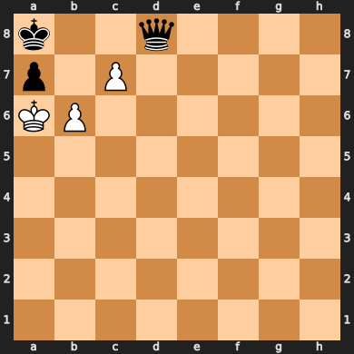Digging through the debug logs
Start MM(depth=2, alpha=-inf, beta=inf)
Start MM(depth=1, alpha=-inf, beta=inf)
Start MM(depth=0, alpha=-inf, beta=inf)
End MM(depth=0, alpha=-inf, beta=inf) = -8
Start MM(depth=0, alpha=-inf, beta=-8)
End MM(depth=0, alpha=-inf, beta=-8) = -8
Start MM(depth=0, alpha=-inf, beta=-8)
End MM(depth=0, alpha=-inf, beta=-8) = -8
Start MM(depth=0, alpha=-inf, beta=-8)
End MM(depth=0, alpha=-inf, beta=-8) = -8
Start MM(depth=0, alpha=-inf, beta=-8)
End MM(depth=0, alpha=-inf, beta=-8) = -8
Start MM(depth=0, alpha=-inf, beta=-8)
End MM(depth=0, alpha=-inf, beta=-8) = -8
Start MM(depth=0, alpha=-inf, beta=-8)
End MM(depth=0, alpha=-inf, beta=-8) = -8
Start MM(depth=0, alpha=-inf, beta=-8)
End MM(depth=0, alpha=-inf, beta=-8) = -8
Start MM(depth=0, alpha=-inf, beta=-8)
End MM(depth=0, alpha=-inf, beta=-8) = -9
Start MM(depth=0, alpha=-inf, beta=-9)
End MM(depth=0, alpha=-inf, beta=-9) = -8
Start MM(depth=0, alpha=-inf, beta=-9)
End MM(depth=0, alpha=-inf, beta=-9) = -8
Start MM(depth=0, alpha=-inf, beta=-9)
End MM(depth=0, alpha=-inf, beta=-9) = -8
Start MM(depth=0, alpha=-inf, beta=-9)
End MM(depth=0, alpha=-inf, beta=-9) = -8
Start MM(depth=0, alpha=-inf, beta=-9)
End MM(depth=0, alpha=-inf, beta=-9) = -8
Start MM(depth=0, alpha=-inf, beta=-9)
End MM(depth=0, alpha=-inf, beta=-9) = -8
Start MM(depth=0, alpha=-inf, beta=-9)
End MM(depth=0, alpha=-inf, beta=-9) = -8
Start MM(depth=0, alpha=-inf, beta=-9)
End MM(depth=0, alpha=-inf, beta=-9) = -8
Start MM(depth=0, alpha=-inf, beta=-9)
End MM(depth=0, alpha=-inf, beta=-9) = -8
Start MM(depth=0, alpha=-inf, beta=-9)
End MM(depth=0, alpha=-inf, beta=-9) = -8
Start MM(depth=0, alpha=-inf, beta=-9)
End MM(depth=0, alpha=-inf, beta=-9) = -9
Start MM(depth=0, alpha=-inf, beta=-9)
End MM(depth=0, alpha=-inf, beta=-9) = -8
Start MM(depth=0, alpha=-inf, beta=-9)
End MM(depth=0, alpha=-inf, beta=-9) = -8
End MM(depth=1, alpha=-inf, beta=-9) = -9
Start MM(depth=1, alpha=-9, beta=inf)
Start MM(depth=0, alpha=-9, beta=inf)
End MM(depth=0, alpha=-9, beta=inf) = -8
Start MM(depth=0, alpha=-9, beta=-8)
End MM(depth=0, alpha=-9, beta=-8) = -8
Start MM(depth=0, alpha=-9, beta=-8)
End MM(depth=0, alpha=-9, beta=-8) = -8
Start MM(depth=0, alpha=-9, beta=-8)
End MM(depth=0, alpha=-9, beta=-8) = -8
Start MM(depth=0, alpha=-9, beta=-8)
End MM(depth=0, alpha=-9, beta=-8) = -8
Start MM(depth=0, alpha=-9, beta=-8)
End MM(depth=0, alpha=-9, beta=-8) = -8
Start MM(depth=0, alpha=-9, beta=-8)
End MM(depth=0, alpha=-9, beta=-8) = -8
Start MM(depth=0, alpha=-9, beta=-8)
End MM(depth=0, alpha=-9, beta=-8) = -8
Start MM(depth=0, alpha=-9, beta=-8)
End MM(depth=0, alpha=-9, beta=-8) = -9
End MM(depth=1, alpha=-9, beta=-9) = -9
Start MM(depth=1, alpha=-9, beta=inf)
End MM(depth=1, alpha=-9, beta=inf) = inf
End MM(depth=2, alpha=inf, beta=inf) = infBugs spotted
def buggy_minimax_pruning(board, depth, alpha, beta):
if depth == 0 or board.is_game_over():
return static_evaluation(board)
if board.turn == chess.WHITE:
maxEval = -1_000_000
for move in board.legal_moves:
board.push(move)
eval = minimax_pruning(board, depth-1, alpha, beta)
maxEval = max(maxEval, eval)
alpha = max(alpha, eval)
if beta <= alpha:
break
board.pop()
return maxEval
else:
minEval = math.inf
alpha = -math.inf
beta = math.inf
for move in board.legal_moves:
eval = minimax_pruning(board.push(move), depth-1, alpha, beta)
minEval = min(minEval, eval)
beta = min(beta, eval)
if beta <= alpha:
break
return minEvalUsing Jupyter/Colab “magic”
CPU times: user 2.6 s, sys: 4.78 ms, total: 2.61 s
Wall time: 2.61 sCPU times: user 325 ms, sys: 887 µs, total: 326 ms
Wall time: 326 msOne more thing…
Never pruning in the first move
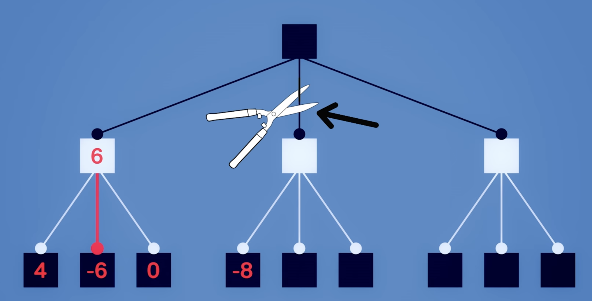Illustration of alpha-beta pruning.
Solution: have minimax return the ‘score’ of the best move, and the move itself.
Multiple return values
The numbers are between 1 and 5.Tuple unpacking
lims = limits([1, 2, 3, 4, 5])
smallestNum = lims[0]
largestNum = lims[1]
print(f"The numbers are between {smallestNum} and {largestNum}.")The numbers are between 1 and 5.smallestNum, largestNum = limits([1, 2, 3, 4, 5])
print(f"The numbers are between {smallestNum} and {largestNum}.")The numbers are between 1 and 5.This doesn’t just work for functions with multiple return values:
Pruning at all levels
def minimax_move(board, depth, alpha=-math.inf, beta=math.inf,
pruning=True):
if depth == 0 or board.is_game_over():
return static_evaluation(board), None
whitesTurn = board.turn == chess.WHITE
scores = []
for move in board.legal_moves:
board.push(move)
score, _ = minimax_move(board, depth-1, alpha, beta, pruning)
scores.append(score)
board.pop()
if pruning:
if whitesTurn:
alpha = max(alpha, score)
else:
beta = min(beta, score)
if beta <= alpha:
break
bestScore = max(scores) if whitesTurn else min(scores)
for move, score in zip(board.legal_moves, scores):
if score == bestScore:
return score, moveSpeed difference
CPU times: user 32.3 s, sys: 104 ms, total: 32.4 s
Wall time: 32.4 sCPU times: user 406 ms, sys: 1.64 ms, total: 408 ms
Wall time: 408 msFurther chess/AI things
Python & chess in the browser using PyScript
New York Times Podcast, How AI Conquered Poker.

Source: IMDB.
Short-circuiting
Patrick vs. depth=5 AI

 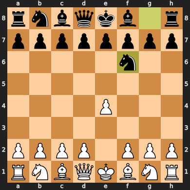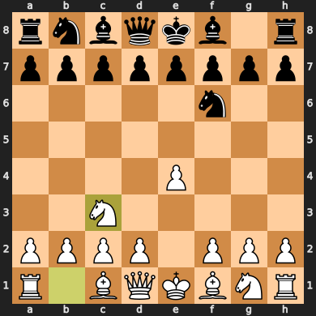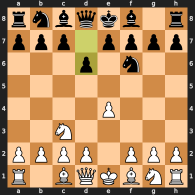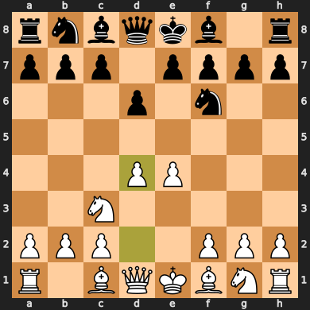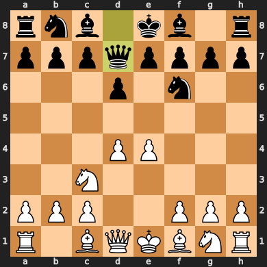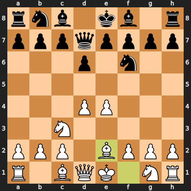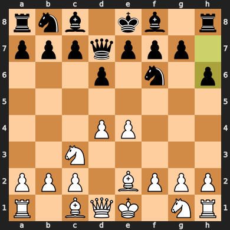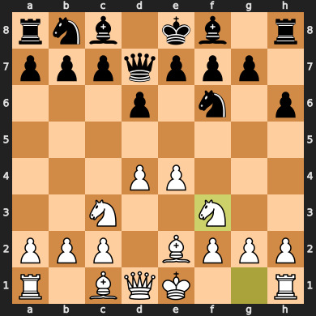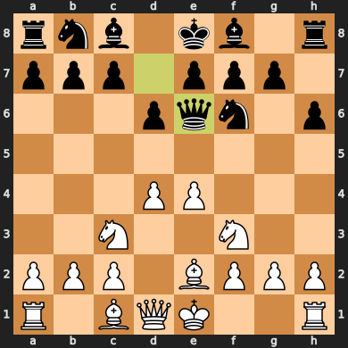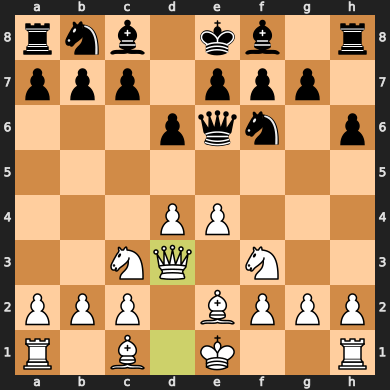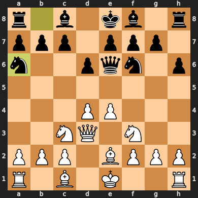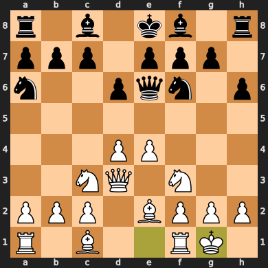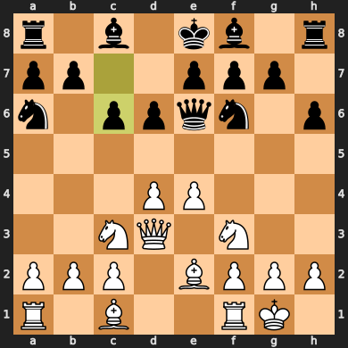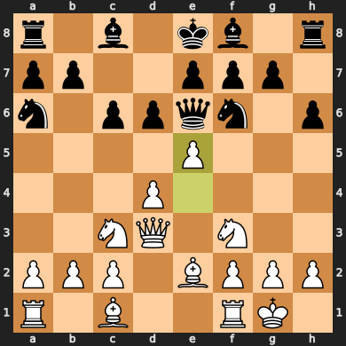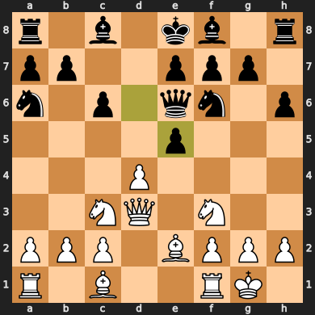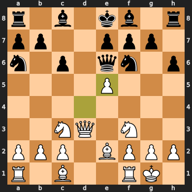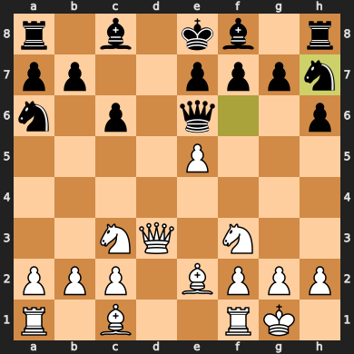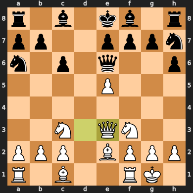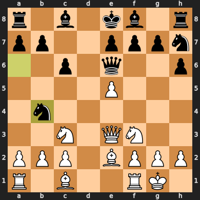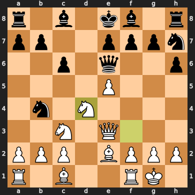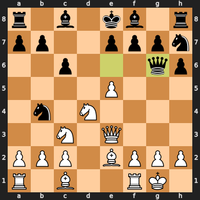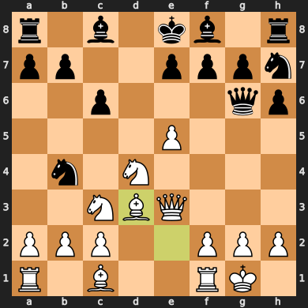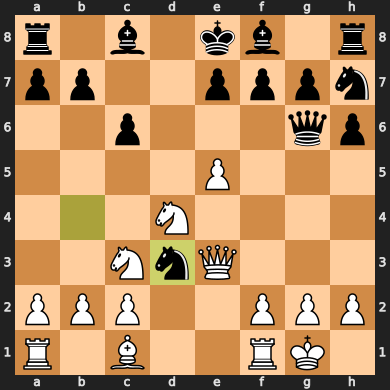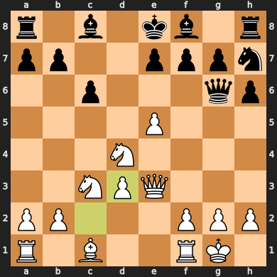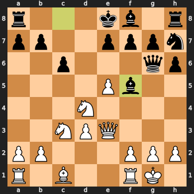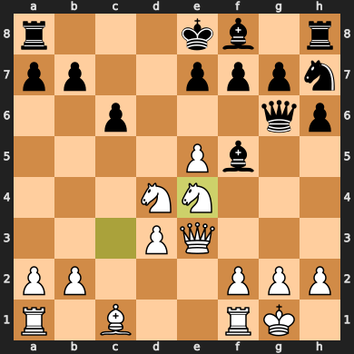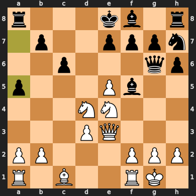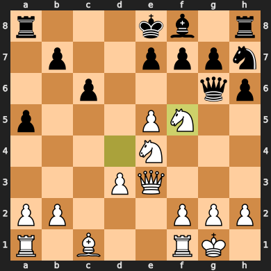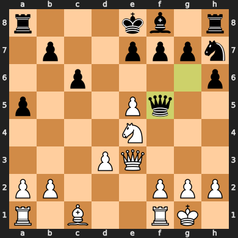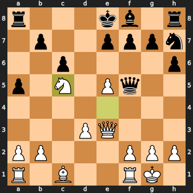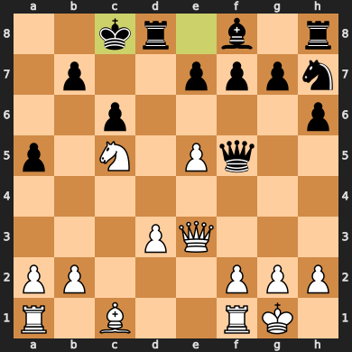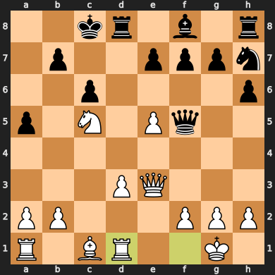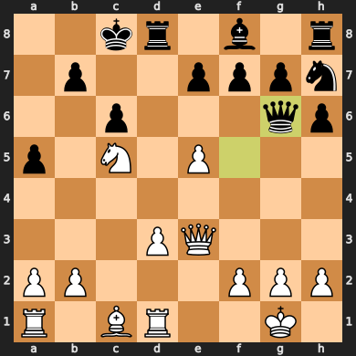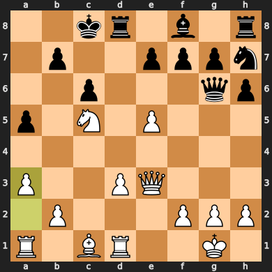
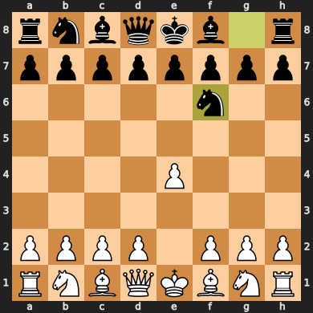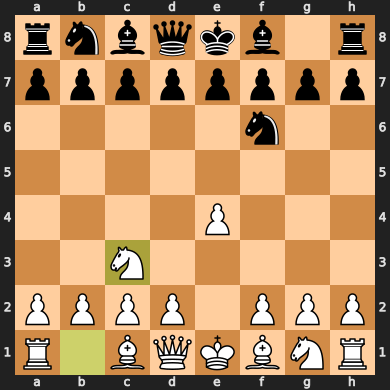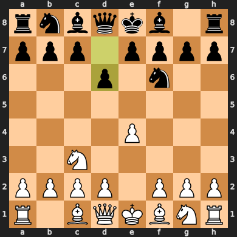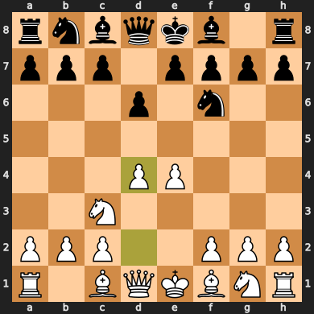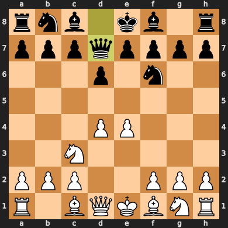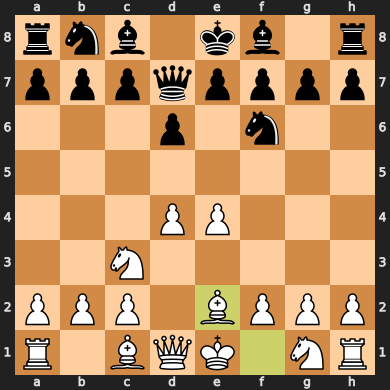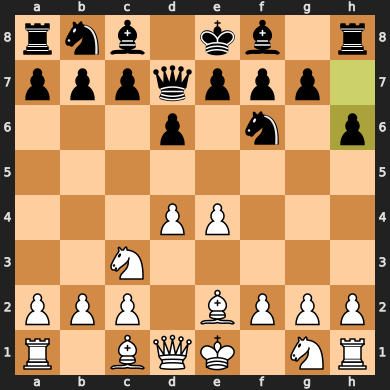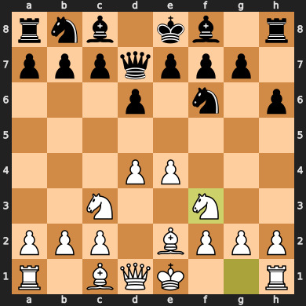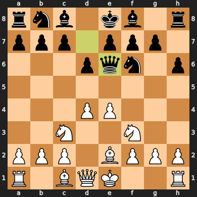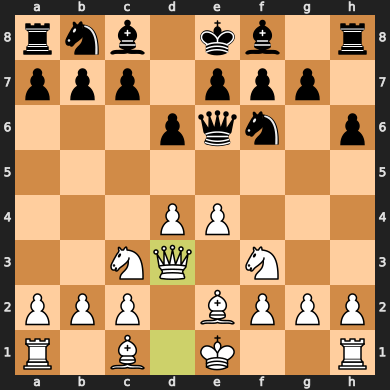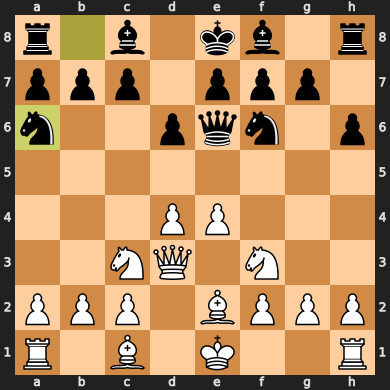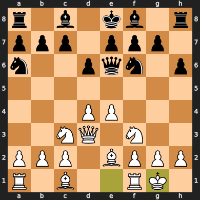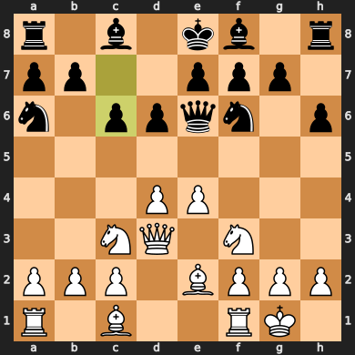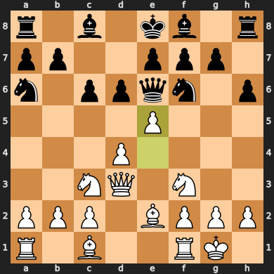Blundered!
 

Tried again

Black on the run…

Machine Learning
Definition
“[Machine Learning is the] field of study that gives computers the ability to learn without being explicitly programmed” Arthur Samuel (1959)

Source: Randall Munroe (2017), xkcd #1838: Machine Learning.
Traditional AI versus ML
Source: Aurélien Géron (2019), Hands-On Machine Learning with Scikit-Learn, Keras, and TensorFlow, 2nd Edition, Figures 1-1 and 1-2 (redacted).
Benefits of ML


Source: Aurélien Géron (2019), Hands-On Machine Learning with Scikit-Learn, Keras, and TensorFlow, 2nd Edition, Figures 1-3 and 1-4 (redacted).
Categories of Machine Learning Problems
Types of ML problems
- Supervised learning
- Self-supervised learning
Others:
- Unsupervised learning
- Reinforcement learning
- Active learning
- Semi-supervised learning
Supervised learning
Regression
- Given policy \(\hookrightarrow\) predict the rate of claims.
- Given policy \(\hookrightarrow\) predict claim severity.
- Given a reserving triangle \(\hookrightarrow\) predict future claims.
Classification
- Given a claim \(\hookrightarrow\) classify as fraudulent or not.
- Given a customer \(\hookrightarrow\) predict customer retention patterns.
Supervised learning: mathematically

A recipe for supervised learning.
Source: Matthew Gormley (2021), Introduction to Machine Learning Lecture Slides, Slide 67.
Self-supervised learning
Data which ‘labels itself’. Example: language model.

Source: Amit Chaudhary (2020), Self Supervised Representation Learning in NLP.
Example: image inpainting

Image inpainting example using Mads Mikkelsen in the CelebA-HQ dataset.
Other examples: image super-resolution, denoising images.
Source: Liu et al. (2018), Image Inpainting for Irregular Holes using Partial Convolutions, Figure 8.
Example: Deoldify images #1

A deoldified version of the famous “Migrant Mother” photograph.
Source: Deoldify package.
Example: Deoldify images #2

A deoldified Golden Gate Bridge under construction.
Source: Deoldify package.
Deep Learning

Meditation + books = Deep learning.
Source: Freepik, Woman sitting in lotus position on the books above the clouds.
{kind=link}
How do real neurons work?
A neuron ‘firing’
An artificial neuron

A neuron in a neural network with step function activation.
Source: Aurélien Géron (2019), Hands-On Machine Learning with Scikit-Learn, Keras, and TensorFlow, 2nd Edition, Fig. 10-04 (redacted).
One neuron
\[ \begin{aligned} z~=~&x_1 \times w_1 + \\ &x_2 \times w_2 + \\ &x_3 \times w_3 . \end{aligned} \]
\[ \begin{aligned} a &= \text{step}(z) \\ &= \begin{cases} 1 & \text{if } z > 0 \\ 0 & \text{if } z \leq 0 \end{cases} \end{aligned} \]
Here, \(x_1\), \(x_2\), \(x_3\) is just some fixed data.
The weights \(w_1\), \(w_2\), \(w_3\) should be ‘learned’.
Source: Aurélien Géron (2019), Hands-On Machine Learning with Scikit-Learn, Keras, and TensorFlow, 2nd Edition, Fig. 10-04 (redacted).
One neuron with bias
\[ \begin{aligned} z~=~&x_1 \times w_1 + \\ &x_2 \times w_2 + \\ &x_3 \times w_3 + b . \end{aligned} \]
\[ \begin{aligned} a &= \text{step}(z) \\ &= \begin{cases} 1 & \text{if } z > 0 \\ 0 & \text{if } z \leq 0 \end{cases} \end{aligned} \]
See interactive plot.
The weights \(w_1\), \(w_2\), \(w_3\) and bias \(b\) should be ‘learned’.
Source: Aurélien Géron (2019), Hands-On Machine Learning with Scikit-Learn, Keras, and TensorFlow, 2nd Edition, Fig. 10-04 (redacted).
A basic neural network

A basic fully-connected/dense network with one hidden layer.
Source: Aurélien Géron (2019), Hands-On Machine Learning with Scikit-Learn, Keras, and TensorFlow, 2nd Edition, Fig. 10-07 (redacted).
Step-function activation
Perceptrons
Brains and computers are binary, so make a perceptron with binary data. Seemed like a reasonable idea.
Modern neural network
Replace binary state with continuous state. Invent fast training algorithm. Still slow and tedious to create without open source libraries.
Try different activation functions
Flexible

Source: Shan-Hung Wu (2022), CS565600 Deep Learning Lecture Slides, Lecture 10 Slide 44.
Feature engineering

Source: Krohn (2019), Deep Learning Illustrated: A Visual, Interactive Guide to Artificial Intelligence (redacted).
Example: Facial recognition

Example of manual feature engineering.
Source: Fenjiro (2019), Face Id: Deep Learning for Face Recognition, Medium.
What are Keras and TensorFlow?
Keras is common way of specifying, training, and using neural networks. It gives a simple interface to various backend libraries, including Tensorflow.

Keras as a independent interface, and Keras as part of Tensorflow.
Source: Aurélien Géron (2019), Hands-On Machine Learning with Scikit-Learn, Keras, and TensorFlow, 2nd Edition, Figure 10-10 (redacted).
The deep learning hammer
Deep learning is not always the answer!

The map of data science.
Source: Serge Masis (2022), LinkedIn post.
Quiz
In this ANN, how many of the following are there:
- features,
- targets,
- weights,
- biases, and
- parameters?
What is the depth?

Source: Dertat (2017), Applied Deep Learning - Part 1: Artificial Neural Networks, Medium.
Import syntax
Python standard library
'/Users/plaub/Dropbox/Lecturing/ACTL3143/DeepLearningForActuaries/Lecture-2-Deep-Learning-Keras'Note
Here, the syntax is package.function().
Import a few functions
Timing using pure Python
Data science packages

Common data science packages
Source: Learnbay.co, Python libraries for data analysis and modeling in Data science, Medium.
Importing using as
Note
Here, the syntax is shortenedPackage.className() or shortenedPackage.className().
Importing from a subdirectory
Want tensorflow.keras.models.Sequential().
Alternatives using from:
Note
Syntax is package.subdirectory.subdirectory.className().
California House Price Prediction
Import the data
from sklearn.datasets import fetch_california_housing
features, target = fetch_california_housing(as_frame=True, return_X_y=True)
features| MedInc | HouseAge | AveRooms | AveBedrms | Population | AveOccup | Latitude | Longitude | |
|---|---|---|---|---|---|---|---|---|
| 0 | 8.3252 | 41.0 | 6.984127 | 1.023810 | 322.0 | 2.555556 | 37.88 | -122.23 |
| 1 | 8.3014 | 21.0 | 6.238137 | 0.971880 | 2401.0 | 2.109842 | 37.86 | -122.22 |
| 2 | 7.2574 | 52.0 | 8.288136 | 1.073446 | 496.0 | 2.802260 | 37.85 | -122.24 |
| ... | ... | ... | ... | ... | ... | ... | ... | ... |
| 20637 | 1.7000 | 17.0 | 5.205543 | 1.120092 | 1007.0 | 2.325635 | 39.43 | -121.22 |
| 20638 | 1.8672 | 18.0 | 5.329513 | 1.171920 | 741.0 | 2.123209 | 39.43 | -121.32 |
| 20639 | 2.3886 | 16.0 | 5.254717 | 1.162264 | 1387.0 | 2.616981 | 39.37 | -121.24 |
20640 rows × 8 columns
What is the target?
Location
Python’s matplotlib package \(\approx\) R’s basic plots.
Location #2
Python’s seaborn package \(\approx\) R’s ggplot2.

Features
Index(['MedInc', 'HouseAge', 'AveRooms', 'AveBedrms', 'Population', 'AveOccup',
'Latitude', 'Longitude'],
dtype='object')How many?
Or
Set aside a fraction for a test set


Adapted from: Heaton (2022), Applications of Deep Learning, Part 2.1: Introduction to Pandas, and this random site.
The training set
| MedInc | HouseAge | AveRooms | AveBedrms | Population | AveOccup | Latitude | Longitude | |
|---|---|---|---|---|---|---|---|---|
| 8158 | 4.2143 | 37.0 | 5.288235 | 0.973529 | 860.0 | 2.529412 | 33.81 | -118.12 |
| 18368 | 5.3468 | 42.0 | 6.364322 | 1.087940 | 957.0 | 2.404523 | 37.16 | -121.98 |
| 19197 | 3.9191 | 36.0 | 6.110063 | 1.059748 | 711.0 | 2.235849 | 38.45 | -122.69 |
| ... | ... | ... | ... | ... | ... | ... | ... | ... |
| 5390 | 2.9344 | 36.0 | 3.986717 | 1.079696 | 1756.0 | 3.332068 | 34.03 | -118.38 |
| 860 | 5.7192 | 15.0 | 6.395349 | 1.067979 | 1777.0 | 3.178891 | 37.58 | -121.96 |
| 15795 | 2.5755 | 52.0 | 3.402576 | 1.058776 | 2619.0 | 2.108696 | 37.77 | -122.42 |
15480 rows × 8 columns
Tip
Why is the X_ in the variable name in capitals and the y_ in lowercase?
Simple baseline model
Linear Regression
\[ \hat{y} = w_0 + \sum_{i=1}^N w_i x_i .\]
The \(w_0\) is in lr.intercept_ and the others are in
Make some predictions
| MedInc | HouseAge | AveRooms | AveBedrms | Population | AveOccup | Latitude | Longitude | |
|---|---|---|---|---|---|---|---|---|
| 8158 | 4.2143 | 37.0 | 5.288235 | 0.973529 | 860.0 | 2.529412 | 33.81 | -118.12 |
| 18368 | 5.3468 | 42.0 | 6.364322 | 1.087940 | 957.0 | 2.404523 | 37.16 | -121.98 |
| 19197 | 3.9191 | 36.0 | 6.110063 | 1.059748 | 711.0 | 2.235849 | 38.45 | -122.69 |
Plot the predictions
Calculate mean squared error
y_pred = lr.predict(X_train)
df = pd.DataFrame({"Predictions": y_pred, "True values": y_train})
df["Squared Error"] = (df["Predictions"] - df["True values"])**2
df.head(4)| Predictions | True values | Squared Error | |
|---|---|---|---|
| 8158 | 2.358709 | 2.285 | 0.005433 |
| 18368 | 3.141175 | 2.799 | 0.117084 |
| 19197 | 2.222771 | 1.830 | 0.154269 |
| 3746 | 3.179989 | 4.658 | 2.184517 |
Using mean_squared_error
0.5205522163645129Store the results in a dictionary:
Our First Neural Network
Decide on the architecture

A simple network with one hidden layer with 30 neurons.
Generated used the NN-SVG tool.
Create a Keras ANN model
Create the model:
Inspect the model
Model: "sequential_4"_________________________________________________________________ Layer (type) Output Shape Param # ================================================================= dense (Dense) (None, 30) 270 dense_1 (Dense) (None, 1) 31 =================================================================Total params: 301Trainable params: 301Non-trainable params: 0_________________________________________________________________The model is initialised randomly
array([[-518.50226],
[-576.07574],
[-488.2193 ]], dtype=float32)Controlling the randomness
from tensorflow.random import set_seed
set_seed(123)
model = Sequential([
Dense(30, activation="relu"),
Dense(1)])
display(model.predict(X_test.head(3)))
set_seed(123)
model = Sequential([
Dense(30, activation="relu"),
Dense(1)])
display(model.predict(X_test.head(3)))array([[166.6344 ],
[187.33377],
[151.30031]], dtype=float32)array([[166.6344 ],
[187.33377],
[151.30031]], dtype=float32)Fit the model
set_seed(123)
model = Sequential([
Dense(30, activation="relu"),
Dense(1)
])
model.compile("adam", "mse")
%time hist = model.fit(X_train, y_train, epochs=5, verbose=False)
hist.history["loss"]CPU times: user 845 ms, sys: 117 ms, total: 963 ms
Wall time: 706 ms[1640.6534423828125,
4.11346960067749,
1.8220018148422241,
1.1254563331604004,
0.8774542212486267]Make predictions
array([[2.7843935],
[2.5402853],
[1.6870949]], dtype=float32)Note
The .predict gives us a ‘matrix’ not a ‘vector’. Calling .flatten() will convert it to a ‘vector’.
Plot the predictions
Assess the model
Some predictions are negative:
Force positive predictions
Try running for longer
Loss curve
Loss curve
Predictions
Try different activation functions
Enforce positive outputs (ReLU)
set_seed(123)
model = Sequential([
Dense(30, activation="relu"),
Dense(1, activation="relu")
])
model.compile("adam", "mse")
%time hist = model.fit(X_train, y_train, epochs=100, \
verbose=False)
import numpy as np
losses = np.round(hist.history["loss"], 2)
print(losses[:5], "...", losses[-5:])CPU times: user 14.8 s, sys: 1.79 s, total: 16.5 s
Wall time: 12.2 s
[1607.21 5.62 5.62 5.62 5.62] ... [5.62 5.62 5.62 5.62 5.62]Plot the predictions

Enforce positive outputs (\(\mathrm{e}^{\,x}\))
set_seed(123)
model = Sequential([
Dense(30, activation="relu"),
Dense(1, activation="exponential")
])
model.compile("adam", "mse")
%time hist = model.fit(X_train, y_train, epochs=5, verbose=False)
losses = hist.history["loss"]
print(losses)CPU times: user 1.11 s, sys: 116 ms, total: 1.22 s
Wall time: 707 ms
[nan, nan, nan, nan, nan]Preprocessing
Re-scaling the inputs
Same model with scaled inputs
Loss curve
Loss curve
Predictions
Comparing MSE (smaller is better)
On training data:
{'Linear Regression': 0.5205522163645129,
'Basic ANN': 0.8213997980052227,
'Long run ANN': 0.6608583727274803,
'Exp ANN': 0.3220443619821428}On test data (expect worse, i.e. bigger):
Comparing models (in sample)
Comparing models (out sample)
Glossary
- activations, activation function
- artificial intelligence vs machine learning
- artificial neural network
- biases (in neurons)
- classification problem
- cost/loss function
- deep network, network depth
- dense or fully-connected layer
- epoch
- feed-forward neural network
- Keras, Tensorflow, PyTorch
- labelled/unlabelled data
- machine learning
- matplotlib, seaborn
- neural network architecture
- perceptron
- ReLU
- representation learning
- sigmoid activation function
- targets
- training/test split
- universal approximation theorem
- weights (in a neuron)
Slides: Dr Patrick Laub (@PatrickLaub).